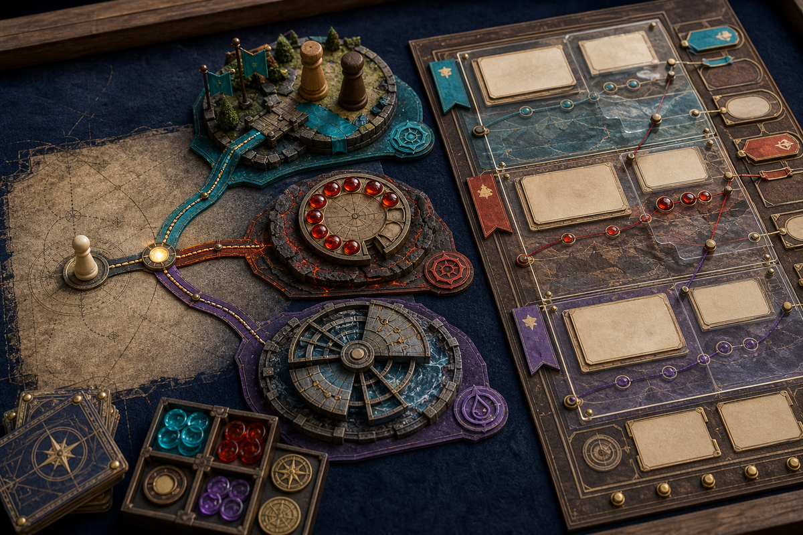

Spark a situation. Offer real choices. Let consequence remember.
Ludis Continuum carries play and fiction from first imaginative pressure through live decisions, table evidence, canon governance, and the next playable horizon—without confiscating player agency or the creator’s voice.
Source edition 1.1.0 · Manual Codex and Claude Code skill source · MIT License

Choose the delight mode
Begin where the player or creator needs value now.
PLAY NOW
Enter the fiction in the first response.
Open on an evocative situation, expose only the controls needed, and offer two to four materially different choices plus freedom to attempt something else.
First proof: a legible choice with a consequence that matters.
CHARACTER & FICTION FORGE
Turn thin prompts into usable pressure.
Create a distinctive want, contradiction, relationship, secret or uncertainty, hooks, and room for the user to steer. Preserve supplied canon; mark inventions as proposals.
First proof: an artifact ready to play, write, or revise.
CAMPAIGN OPERATIONS
Keep the table’s reality governable.
Use the campaign ledger, consent contract, prep loop, player-safe exports, deterministic checks, and explicit GM approval for canon mutation.
First proof: contradictions surfaced and the next session made playable.
EXPORT & VTT HANDOFF
Turn governed state into files other tools can speak.
Build a neutral Ludis Pack, exact-byte player handoff, Alchemy character JSON, or Foundry v14 offline module without granting the target custody of canon.
First proof: an inspectable ZIP with a loss report and honest support label. Build one.
Read the table before the world
System, tone, consent, scope, and authority shape every artifact.
For campaigns, determine the system and edition when mechanics matter, premise and tone, player preferences and boundaries, intended scope, existing canon and source authority, current session horizon, and whether this is a new workspace or continuation.
Rules postureVerified system and edition, supplied formulas, house rules, or explicitly provisional qualitative mechanics.
Creative promisePremise, tone, scale, pressures in motion, and the player-facing invitation.
Consent boundaryLines, veils, and other declared limits recorded without dramatizing or testing them.
Canon authorityWhat is settled, what is supplied, what is proposed, and who may approve mutation or publication.
One loop, earliest unresolved stage first
Seed → Frame → Prepare → Play → Record → Resolve → Advance
01SeedIntent, rules posture, preferences, boundaries, inspirations, existing material, and what the next session actually needs.
02FrameA playable promise, pressures in motion, scale, tone, and situations rather than a plot players must obey.
03PrepareOnly what earns table time: stakes, approaches, telegraphing, clues, consequences, adaptation, and unresolved mechanics.
04PlayCompact GM packet, separate player-safe material, improvisation handles, and respect for creative approaches.
05RecordObservations, choices, declared outcomes, improvised facts, resource changes, open questions, and consent-relevant notes.
06ResolveProposed consequences, faction changes, reactions, rumors, supersessions, and causal links for GM approval.
07AdvanceAudit continuity, leakage, dead prep, stalled factions, player interests, mechanics, and the smallest useful next-prep list.
The Campaign State Ledger
Canon is promoted, not generated by confidence.
campaign-ledger.json is canonical. Everything else remains a proposal, observation, projection, or artifact until the GM promotes it.
STATUS
proposedCreated for consideration; does not overwrite settled truth.
active_canonGM-promoted and authoritative within its scope.
disputedCompeting claims remain live with authority and consequences visible.
supersededReplaced while lineage remains inspectable.
quarantinedHeld outside ordinary use until a blocking issue is resolved.
retiredRemoved from active play without pretending it never existed.
KEEP DISTINCT
canonproposalsrumorssecretsobservationsplayer choicesconsequencesfactions & clocksopen threadsretired materialrules referencesassetsapprovalspublication state
A rumor is player-facing uncertainty, not false canon. An observation records what happened, not the explanation. A proposal never silently harmonizes a contradiction or overwrites settled state.
GM_ONLY
Secrets stay secret.
Visibility is part of the object contract, not a filename convention.
PLAYER_SAFE
Candidate bytes earn approval.
The projection can include structurally valid, export-eligible player_safe objects in canon or non-canon statuses. A human approves the complete candidate, not each object.
Prepare situations, not obedience
Every encounter should create decisions at the table.
Situation
What is happening now, who is acting, and why delay changes the world.
Stakes
What can be gained, lost, exposed, transformed, or set in motion.
Approaches
At least three viable paths when scope permits, plus room for player invention.
Telegraphing
Clues and warning proportional to danger; surprise never excuses a consent breach.
Consequences
Meaningful results for success and failure, including world response rather than dead ends.
Adaptation
What changes when players bypass, ally with, transform, or creatively ruin the prepared material.
Lore should create decisions, not merely paragraphs. Randomness supplies controlled surprise; intention supplies coherence.
Progressive creative loading
One exact instrument for the immediate transformation.
Load no second core unless the first cannot complete the artifact without a genuinely different creative motion. Instruments supply bearings; they are not canon, authoritative rules, or a worked setting.
Advance one eligible proposal after an explicit operator assertion of GM approval.
roll_table.py
Make seeded random selection reproducible.
export_campaign.py
Build neutral GM packs or reviewable player candidates, then bind approval to exact candidate and preview bytes.
export_target.py
Build statically validated Alchemy character JSON or a Foundry v14 offline module with a loss report.
snapshot_campaign.py
Create a hashed archive without recursively nesting older snapshots.
A useful invocation
Start with playable pressure.
Use $ludis-continuum to prepare the next session from this campaign state. Preserve settled canon and the table’s consent boundaries, surface any contradiction instead of silently fixing it, create only what can earn table time, give the situation at least three viable approaches with proportional telegraphing and meaningful consequences, keep secrets out of the player-safe artifact, and finish by naming what remains proposed, disputed, or awaiting GM approval.
For a one-shot or fiction artifact, Ludis delivers value first under a reversible provisional frame. For campaign mutation, the GM remains the decision authority.